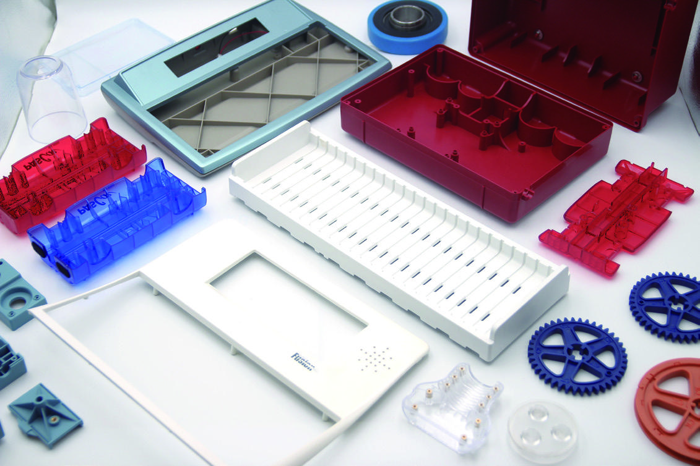
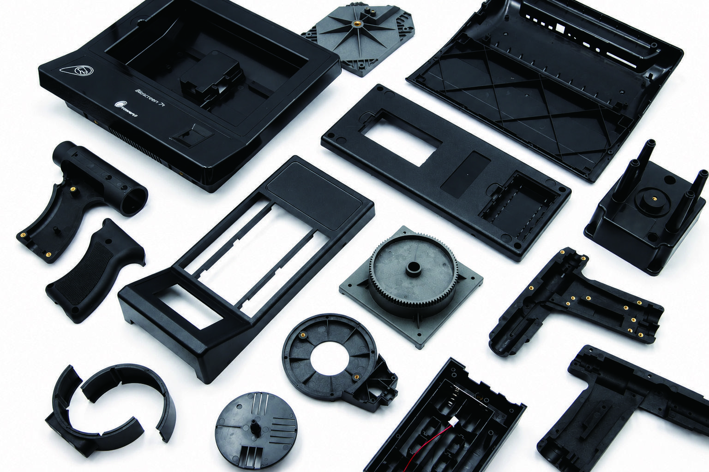
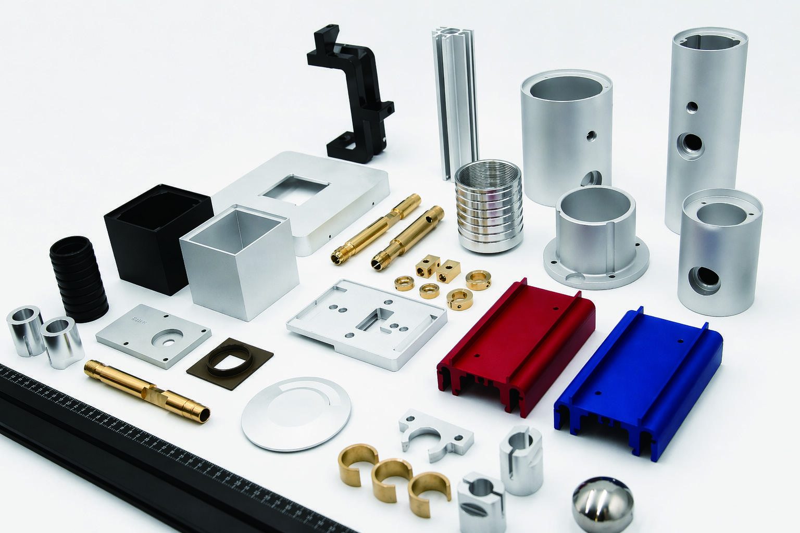
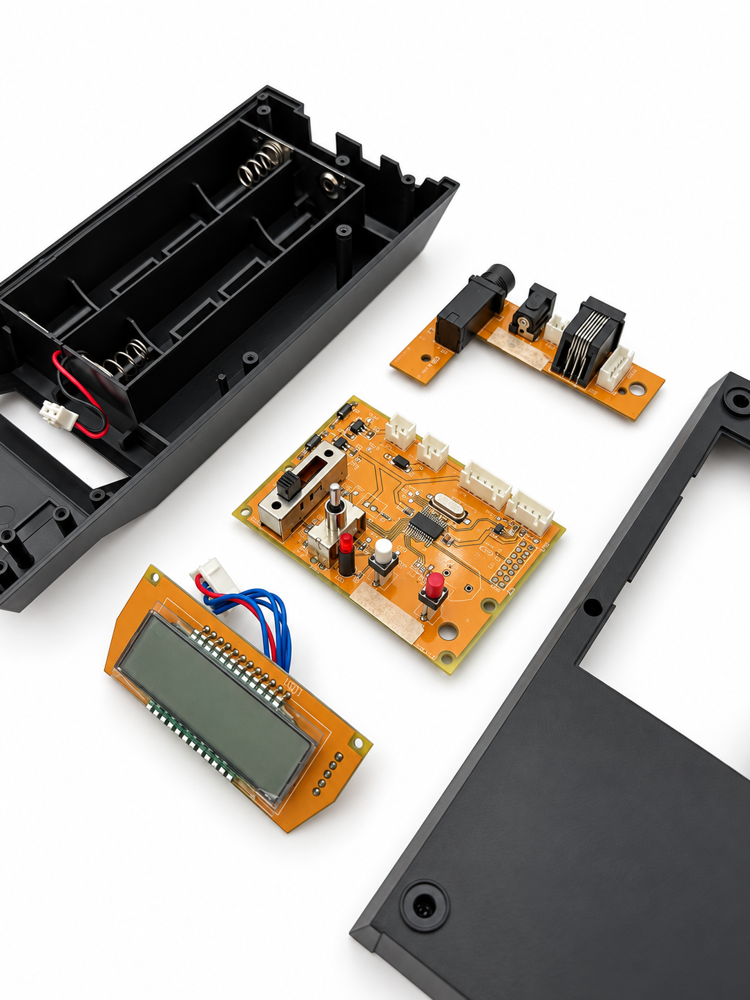

01
Plastic injection molding
Structural housings, functional parts, threaded inserts and over-molded components.
ABS · PC · PA · PC/ABS · PMMA · PP · POM · PBT

OEM manufacturing partner · Taiwan
OEM manufacturing for mechanical and electronic products.
Plastic injection molding, supported by CNC machining and assembly integration. One partner to take your drawings from engineering review to stable production.
Discuss your projectStart with your drawings. Let’s work through the details.
From structural plastic housings to precision metal components, we coordinate the processes your product needs.

Structural housings, functional parts, threaded inserts and over-molded components.
ABS · PC · PA · PC/ABS · PMMA · PP · POM · PBT

Brackets, shafts, spacers and bushings, made to your component requirements.
Aluminum · Stainless steel · Brass · Carbon steel

Metal–plastic structures, mechanical subassemblies and PCBA integration, coordinated from your drawings.
Component sourcing · Assembly · Ultrasonic welding
Explore all manufacturing capabilities
Anodizing, electroplating, passivation, powder coating, painting, pad printing and silk screening.
SURFACE FINISHING02 / CASE STUDIES
From Engineering Challenges to Production Solutions
See how plastic parts, electronics and mechanical components come together through one coordinated manufacturing program.
03 / Your manufacturing partner
One point of contact.
A connected manufacturing process.
Managing a product across multiple processes takes more than a drawing. We bring engineering communication, production coordination and quality oversight together in Taiwan.
years of manufacturing
experience
Work through specifications, materials and manufacturing questions in fluent English.
On-site inspections, detailed reporting and production coordination to support consistent quality.
Support for prototypes, pilot builds and high-mix, low-to-medium volume production.
Component sourcing, manufacturing coordination and export logistics through one dedicated contact.
Most projects begin with complete drawings. We review the details with you before moving into manufacturing.
Share drawings, specifications, materials and expected quantities.
Review manufacturability and identify suitable materials and processes.
Consider pricing alongside practical cost or design improvements.
Validate prototype or pilot-run samples before production.
Coordinate manufacturing, quality monitoring and shipment.
Let’s review your project
Tell us what you’re developing and where you need support. We’ll review your requirements and discuss the next steps.
5F-5, No. 351, YangGuang St., Taipei 11491, Taiwan+886 (2) 8797 6901info@actech-inc.com